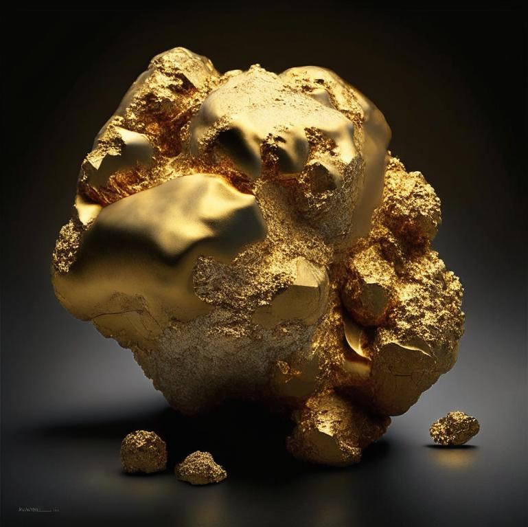

Нобелий
Нобе́лий (химический символ — No, лат. Nobelium) — химический элемент 3-й группы (по устаревшей классификации — побочной подгруппы третьей группы, IIIB) седьмого периода периодической системы химических элементов Д. И. Менделеева, с атомным номером 102. Относится к семейству актиноидов.
Первой об открытии 102 элемента заявила в 1957 году группа учёных, работавших в Стокгольме (Швеция). Они же и предложили назвать элемент нобелий в честь Альфреда Нобеля. Однако позже эти данные не были подтверждены работами других лабораторий. 102 элемент был впервые получен в ходе экспериментов на ускорителе Объединённого института ядерных исследований в Дубне в 1963—1967 годах группой Г. Н. Флёрова. Независимо от них примерно в то же время элемент был получен и в Калифорнийском университете в г. Беркли (США). В 1992 году международное научное сообщество признало приоритет открытия 102 элемента за физиками Дубны. В СССР это достижение было признано как научное открытие и занесено в Государственный реестр открытий СССР под № 34 с приоритетом от 9 июля 1963 г.Советские исследователи предложили назвать новый элемент жолиотий (Jl) в честь Фре

Изотопы нобелия синтезируют в циклотроне при бомбардировке U и трансурановых элементов ионами 22Ne и других лёгких элементов.В настоящее время нобелий используется только в научных исследованиях и не имеет практического применения.